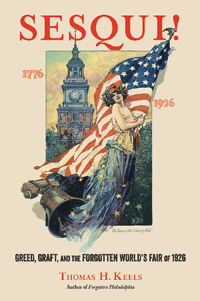

<body bgcolor="#FFFFFF" text="#000000" link="#0000FF" vlink="#CC0000" alink="#CC0000"><center><hr width="350" size="1" align="center" noshade>It was meant to be the greatest world's fair of all time-but it ended up as the "Flop Heard 'Round the World"<hr width="350" size="1" align="center" noshade><p><a href="https://cdcshoppingcart.uchicago.edu/Cart/ChicagoBook.aspx?ISBN=&&PRESS=temple" target="_top">Buy this book!</a> | <a href="https://cdcshoppingcart.uchicago.edu/Cart/Cart.aspx?PRESS=temple" target="_top">View Cart</a> | <a href="https://cdcshoppingcart.uchicago.edu/Cart/Cart.aspx?PRESS=temple" target="_top">Check Out</a></p><p></p></center><!--none//--><h1 class = "booktitle">Sesqui!
</h1> <h1 class = "subtitle">Greed, Graft, and the Forgotten World's Fair of 1926</h1>
<h3>Thomas H. Keels</h3>
<p class="info">cloth: $40.00, Mar 17<BR>EAN:&nbsp;978-1-4399-0329-2<BR><font color=#990033>Not Yet Published Preorder</FONT><font size=-7><br>&nbsp;</font></p><p class="info"></p></td></tr></table>
<BR> <p class="info">400 pp<BR> 6 x 9<BR> 100 halftones, 3 maps <p class="info"><font size=-7>&nbsp;</font></p><p class="info">
</P><BLOCKQUOTE><p>
<i>"In his portrayal of the 1926 Sesqui-Centennial, Tom&nbsp;Keels&nbsp;has once again opened a wide, insightful and revealing historical lens on Philadelphia. It is hard to imagine how the flaws and fault lines in American society could be more stunningly exposed than in this fast-paced story of the 150</i>th <i>anniversary of the nation's birth in the city where it all started.&nbsp;By tracing the political, social, cultural, and economic conflicts that inflicted the once promising event,</i>&nbsp;Sesqui!<i>&nbsp;portrays the ongoing tensions between good government reformers and the political machine, reinforces the second-class citizenry bestowed on women and African Americans, and vividly shows how the best intentions and investment can go so badly wrong through human error.&nbsp;Sesqui!&nbsp;is a great read that helps us better understand urban America in the early twentieth&nbsp;century."</i>-<b>Sam Katz</b>, Executive Producer, History Making Productions
<br></BLOCKQUOTE>
<p>
In 1916, department store magnate and Grand Old Philadelphian John Wanamaker launched plans for a Sesqui-Centennial International Exposition in his hometown in 1926. It would be a magnificent world's fair to celebrate the 150th anniversary of the Declaration of Independence. Wanamaker hoped that the "Sesqui" would also transform sooty, industrial Philadelphia into a beautiful Beaux-Arts city.<br>
<p>However, when the Sesqui opened on May 31, 1926, in the remote, muddy swamps of South Philadelphia, the first visitors were stunned to find an unfinished fair, with a few shabbily built and mostly empty structures. Crowds stayed away in droves: fewer than five million paying customers attended the Sesqui, costing the city millions of dollars. Philadelphia became a national scandal-a city so corrupt that one political boss could kidnap an entire world's fair.&nbsp;<br>
<p>In his fascinating history&nbsp;<i>Sesqui!, </i>noted historian Thomas Keels situates this ill-fated celebration-a personal boondoggle by the all-powerful Congressman William S. Vare-against the transformations taking place in America during the 1920s. Keels provides a comprehensive account of the Sesqui as a meeting ground for cultural changes sweeping the country: women's and African-American rights, anti-Semitism, eugenics, Prohibition, and technological advances.
<br>
<P CLASS="top"><A HREF="#top">BACK TO TOP</A></P>&nbsp;<h2 class="inpageheading"><A NAME="excerpt"></a>Excerpt</h2><p>
<A HREF="http://www.temple.edu/tempress/chapters_1800/2115_ch1.pdf">Read the Introduction (pdf).</a>
<br>
<P CLASS="top"><A HREF="#top">BACK TO TOP</A></P>
<BR>&nbsp;
<h2 class="inpageheading"><A NAME="reviews"></a>Reviews</h2>
<p>
<i>"The close observer of Philadelphia is always searching for the reason that the city fell so far behind its peers in the twentieth century. How did so much industrial wealth amount to so little civic grandeur, even during the roaring twenties? Why did Philadelphia lose its historically vital influence over the nation and the world, while its peer cities gained? How is it possible that only two of a planned dozen or more subway lines got built? Tom&nbsp;Keels' convincing answer to all these questions is the tragicomic disaster of the Sesqui-Centennial, a planned world's fair that spun itself and the city into muddy ground.&nbsp;In </i>Sesqui!<i>, Keels&nbsp;reveals the devastating interplay of the South Philadelphia-based Republican political machine known as The Organization, Republican reformers, elitists, and an incompetent mayor seemingly owned by everyone from which the city could never recover."</i>-<b>Nathaniel Popkin</b>, Founding Editor, <i>Hidden City Daily</i>
<br>
<P CLASS="top"><A HREF="#top">BACK TO TOP</A></P>&nbsp;<P>
<h2 class="inpageheading"><A NAME="contents"></a>Contents</h2><P><SPAN STYLE="font-family: 'Verdana';font-size: 13px;" >Acknowledgments <BR>Introduction<BR>Prologue: The Great Fair<BR><BR>1. Philadelphia, 1916<BR>2. As Welcome as Jazz Music at a Funeral<BR>3. The Sesqui Sinks<BR>4. Call Me Freel<BR>5. The Sesqui Moves South<BR>6. Philadelphia Progressive<BR>7. Kendrick&rsquo;s Karnival<BR>8. A Fine Thing to Show the Nation<BR>9. We&rsquo;re All Good Americans Now<BR>10. The Ladies of the Street<BR>11. The Philadelphia Negro at the Sesqui<BR>12. The Fight of the Century and a Half<BR>13. A Royal Visit<BR>14. Follies of 1926<BR>15. For Sale: One Sesqui<BR><BR>Epilogue <BR>Bibliography<BR>Index</SPAN></P>
<P CLASS="top"><A HREF="#top">BACK TO TOP</A></P>
</P><BR>&nbsp;
<H2 class="inpageheading"><A NAME="author bio"></a>About the Author(s)</H2><p>
<b>Thomas H. Keels</b> is a historian and lecturer who has authored or co-authored seven books and numerous articles on Philadelphia history, including <i>Forgotten Philadelphia: Lost Architecture of the Quaker City</i> (Temple), <i>Philadelphia Graveyards and Cemeteries</i>, and <i>Wicked Philadelphia: Sin in the City of Brotherly Love</i>. A confirmed taphophile, Keels has been a tour guide at Laurel Hill Cemetery, Philadelphia's premier Victorian necropolis, for two decades. Visit him online at http://www.thomaskeels.com/.
<br>
<P CLASS="top"><A HREF="#top">BACK TO TOP</A></P>
<p><h2 class="inpageheading"><a name="subjects"></a>Subject Categories</h2> <p><a href="http://www.temple.edu/tempress/philly.html" target="_top">Philadelphia Region</a> <br><a href="http://www.temple.edu/tempress/general.html" target="_top">General Interest</a> <br><a href="http://www.temple.edu/tempress/history.html" target="_top">History</a> <br><a href="" target="_top"></a> <br><a href="" target="_top"></a> </p>
</p>
<P>
</P>
<p align="center"><a href="https://cdcshoppingcart.uchicago.edu/Cart/ChicagoBook.aspx?ISBN=&&PRESS=temple" target="_top">Buy this book!</a> | <a href="https://cdcshoppingcart.uchicago.edu/Cart/Cart.aspx?PRESS=temple" target="_top">View Cart</a> | <a href="https://cdcshoppingcart.uchicago.edu/Cart/Cart.aspx?PRESS=temple" target="_top">Check Out</a></p><p><font face="Arial" size="1"><a href="copyright.html" onMouseOver="window.status='Web Copyright Policy';return true;" onMouseOut="window.status=''" title="Web Copyright Policy">&copy;</a> 2017 <a href="http://www.temple.edu" target="new" onMouseOver="window.status='Link to Temple University home page';return true;" onMouseOut="window.status=''" title="Link to Temple University home page">Temple University</a>. All Rights Reserved. http://www.temple.edu/tempress/titles/2115_reg.html</font></p>